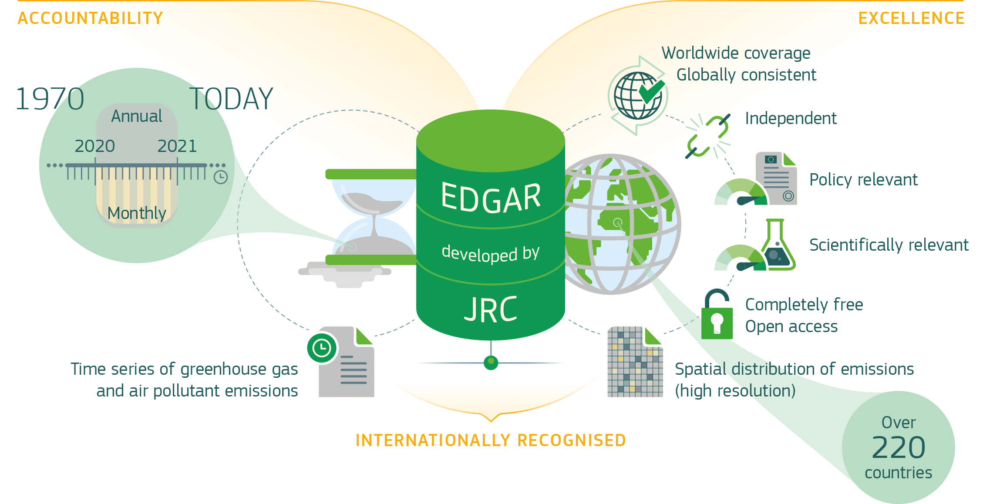
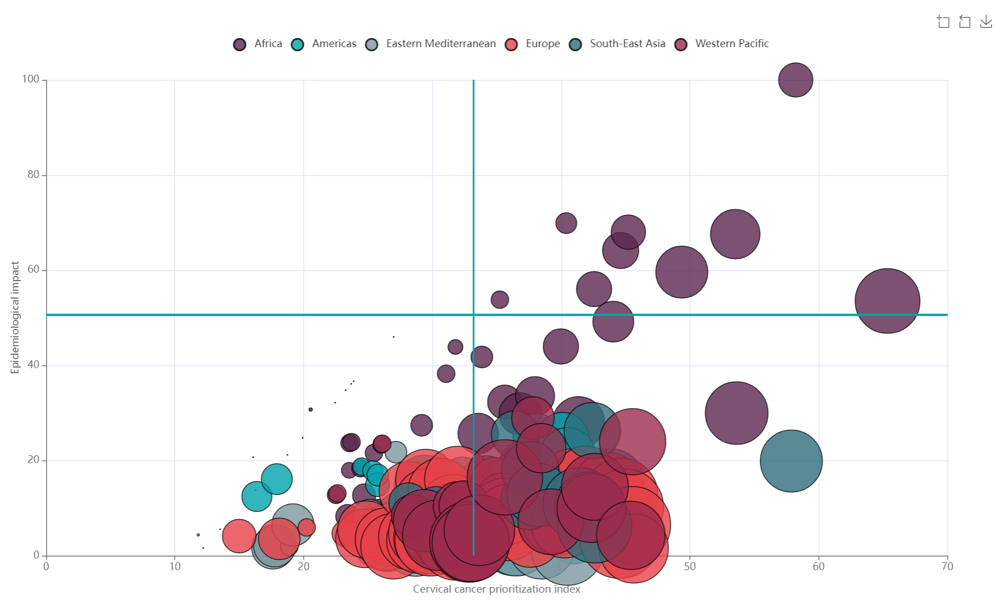
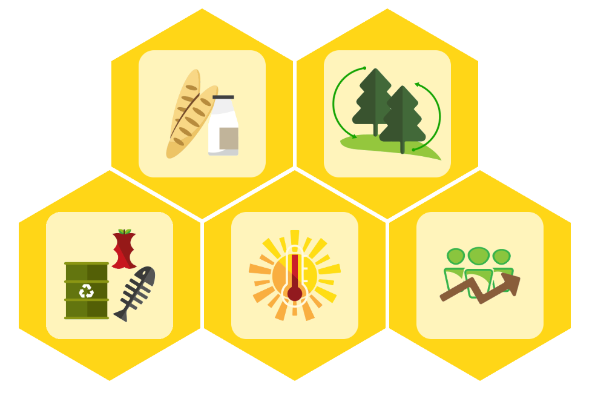
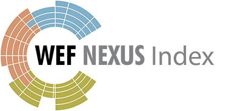
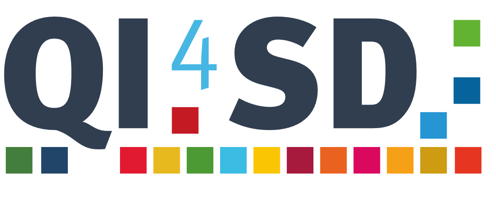
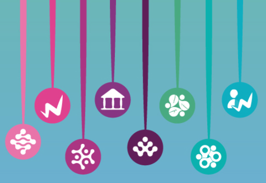

William Becker
About
Blog
Projects
Publications
Projects
A selection of recent work.
Categories
All
(16)
Climate
(1)
Indicators
(11)
Innovation
(2)
Other
(2)
Policy
(8)
Skills
(1)
Software
(4)
Sustainabilty
(1)
Sustainable development
(5)
European Skills Index
Updating and improving the European Skills Index for Cedefop.
Skills
Policy
Indicators
Oct 1, 2023

EDGAR: Global emissions database
EDGAR is a highly detailed global database of greenhouse gas and pollution emissions maintained by the European Commission.
Sustainabilty
Climate
Policy
Jan 9, 2023
A2SIT app for community-based protection
Measuring migrant and refugee vulnerability in Guatemala.
Indicators
Sustainable development
Policy
Jan 5, 2023
Training
Training courses, lecturing and tuition.
Other
Jan 5, 2023
Vietnam provincial innovation index
Auditing and assisting with an index to measure innovation at the regional level in Vietnam.
Innovation
Policy
Indicators
Jan 5, 2023

Composer App
A web app for building and analysing composite indicators
Software
Indicators
Dec 1, 2022
COINr: An R package for composite indicators
My R package is used worldwide by professional developers.
Software
Indicators
Sep 1, 2022

EU Bioeconomy Indicators
Time series analysis for bioeconomy indicators.
Indicators
Sustainable development
Aug 15, 2022
Global Innovation Index
Custom R package development for innovation modelling
Indicators
Innovation
Software
Jun 1, 2022

Water-Energy-Food Nexus Index
Model calculation and global sensitivity analysis.
Indicators
Sustainable development
Mar 1, 2022

Quality Infrastructure for Sustainable Development Index
Linking quality infrastructure and sustainable development with a data-driven analysis.
Indicators
Sustainable development
Policy
Dec 1, 2021
Other projects
An overview of other projects.
Other
Feb 1, 2020
COIN Tool
An advanced Excel tool for composite indicators
Software
Indicators
Nov 4, 2019
European programme monitoring
Monitoring European spending programmes.
Policy
Jun 1, 2019
Impact assessment
Ex-ante impact assessments for European policy making.
Policy
Jan 1, 2019

Asia-Europe Connectivity
Measuring sustainable connectivity between Europe and Asia
Indicators
Sustainable development
Policy
Oct 20, 2018
No matching items